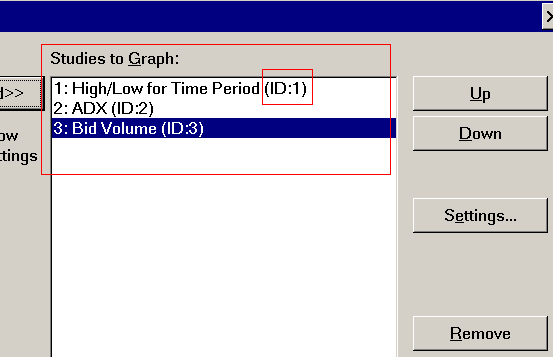

Study/Chart Alerts And Scanning
- General Information
- Monitoring of Alert Formulas
- To Enter an Alert Condition on a Study
- To Enter an Alert Condition on the Main Chart/Price Graph
- Historical and Visual Evaluation of Alert Condition
- Alert Options
- Selecting a Sound for the Alert and Email Notifications
- Alerts Log
- Customizing Messages in Alerts Log
- Scanning for Alert Condition Across Multiple Symbols
- Evaluating Alert Condition Across All Chart Bars
- Applying your Alert Condition To Other Charts by Using Study Collections
- Evaluation of Alert Condition Formulas
- Alert Condition Formula Format
- Formula Format Overview
- Numbers
- Operators
- OR and AND Functions
- Available Main Price Graph Identifiers
- Special Functions
- Referencing Study Subgraphs
- Referencing Other Studies on the Chart
- Referencing Studies on Other Charts
- Referencing Chart Drawings
- Referencing Data Other Than on the Last Bar/Column In the Chart
- Referencing A Range of Data
- Referencing Data Beyond the Last Bar in the Chart
- The Effect of Value Format on Identifier Values
- Writing Formulas for Studies without Obvious Values
- Writing Formulas Based On Color Settings
- ** Support Policy For Alert Condition Formula Programming Help **
- Alert Formula Examples
- Repeating Alert Sound Until Manually Canceled
- Related: Symbol Based Alerts (Opens new page)
General Information
This page has information on the Simple Alerts feature in Sierra Chart. A more advanced alert and system feature is part of the Spreadsheet System/Alert study.
How do you know which alert feature to use? Start with the Simple Alert feature, and if it does not meet your requirements, then use the Spreadsheet System/Alert study. The Spreadsheet System/Alert study allows for larger formulas and more advanced logic.
A Simple Alert Condition Formula can be specified on a chart study or the main chart graph that will be continuously monitored. This alert Condition Formula can also be scanned for.
When an Alert Condition Formula becomes TRUE, an audible alert will be given if enabled, an exclamation mark (!) will be displayed in front of the study graph name, the study graph name will be highlighted as shown below, and a detailed message will be added to the Window >> Alerts Log. An email notification can also be sent.
{kind=link}
The color of the highlight is controlled through the Graphics Settings window. The specific color setting is Colors and Widths >> Alert Highlight Color.
When an Alert Condition Formula was TRUE on the previous formula evaluation, it is evaluated again and it continues to be TRUE, there will not be a new message added to the Alerts Log (Window >> Alerts Manager >> Alerts Log) or a sound played, if enabled. Only when the formula result transitions from FALSE to TRUE will there be a new alert message and sound. However, when the Alert Condition Formula is in a TRUE state, you will still see the Study Name that it is associated with, highlighted on the chart.
When using one of the Spreadsheet studies, or when using an Advanced Custom Study that uses the sc.SetAlert() function, then a Simple Alert Condition Formula entered directly on these studies is ignored. However, other studies on the chart and the main price graph can reference these studies in their Simple Alert Condition Formula.
Each study on a chart can have a Simple Alert Condition Formula and the main price graph can also have a Simple Alert Condition Formula.
When writing and testing a Simple Alert Condition Formula, if it is not TRUE on the last bar in the chart, then it may be hard to know whether it is working correctly. What we recommend is to use either the Color Bar Based on Alert Condition study or the Color Background Based on Alert Condition study and have it reference the study that contains the Simple Alert Condition Formula you are working on.
In this way you can instantly and clearly see if your Alert Condition Formula works as expected because the bars will be colored at the bars where it is TRUE. Alert Condition Formulas can sometimes be complicated to resolve problems with.
It is recommended that you use a step-by-step process to create a formula whereby you start simple and then add to it. The very first formula you should use to simply see how formulas work is =1 or =TRUE. This will color all of the bars in the chart, when using this study, and then you can go from there to a more advanced formula.
Monitoring of Alert Formulas
When an Alert Condition Formula is entered on the main price graph of the chart or on a particular study on the chart, so long as the chart it is on is open and the study is on the chart, it will be monitored for a TRUE condition, as the chart updates.
The chart does not have to be visible, even if it is in another chartbook which is loaded but not visible. The chart only needs to be open but can be open in the background.
Therefore, Sierra Chart needs to be running for the Alert Condition Formulas to be monitored.
To Enter an Alert Condition on a Study
To enter an Alert Condition Formula on a study, you will need to create the Alert Condition Formula based upon the documented Alert Condition Formula Format and enter it into the Condition text box on the Alerts tab in the Study Settings window for the study. Refer to the image below.
Refer to the Modifying Study Settings section on the Chart Studies page for instructions to open the Study Settings window for a study.
For example Alert Condition Formulas, refer to the Examples section on this page.
The Spreadsheet System/Alert study and the Spreadsheet System for Trading study, do not support specifying an Alert Condition Formula or using the Alert options on the Alerts tab of the Study Settings window for these studies. The reason for this, is that the studies themselves have advanced alert functionality which is separate from the Alerts tab.
{kind=link}
To Enter an Alert Condition on the Main Chart/Price Graph
To enter a Simple Alert Condition Formula on the main chart/price graph, select Chart >> Chart Settings >> Alerts from the menu. Enter the Alert Condition Formula using the documented Alert Condition Formula Format into the Alert Condition text box.
For an example alert condition, refer to the Simple Price Alert Example.
{kind=link}
Historical and Visual Evaluation of Alert Condition
It is supported to color the chart bars themselves, the background behind the bars, or place an up arrow or a down arrow above or below a bar, when an Alert Condition Formula becomes TRUE on the corresponding bar.
This will give you a visual indication of the Alert Condition Formula result and also allows you to see the Alert Condition Formula result applied to all of the historical bars in the chart, at least up until the Number of Bars to Calculate Input setting with the Color Bar/Background Based on Alert Condition study.
It is also supported to color a study Subgraph at the chart column, where a particular Condition Formula is true.
To do this, use the Color Bar Based on Alert Condition study or the Color Background Based on Alert Condition study.
{kind=link}
Alert Options
The following are the available options for Simple Alert Formulas.
{kind=link}
Enabled
When the Enabled option is enabled, then the Alert Condition Formula will be evaluated and can trigger an alert signal. Otherwise, it is disabled.
Alert Only Once Per Bar
When the Alert Only Once Per Bar option is enabled, then when the Alert Condition Formula becomes TRUE, goes back to FALSE and becomes TRUE more than once when a bar is forming, only one alert signal will be given.
Even when this option is disabled, if an Alert Condition Formula becomes TRUE and remains TRUE during the formation of a bar, then there will only be one alert signal given.
Evaluate on Bar Close
This option will cause the Alert Condition Formula to be only evaluated on a closed bar. When this option is enabled, effectively what happens is that the Alert Condition formula is evaluated at every chart update, although it is only on the bar before the last bar in the chart.
When an Alert Condition Formula is referencing data from other charts through studies which overlay that data to the chart containing the Alert Condition Formula, Evaluate on Bar Close always applies to the chart containing the study this option is enabled on, or applies to the chart this is enabled on if enabled through the Alerts tab in the Chart Settings of the chart. Whatever data is present at the chart bar before the last bar in the chart, is the data that the formula evaluation is using.
Reset Alert Condition On New Bar
This option will cause the Simple Alert Condition Formula result to be reset back to FALSE when a new bar is added to the chart.
What this means is that if an Alert Condition Formula is currently evaluated as being TRUE, there is a new bar added to the chart, and if it evaluates to TRUE on a new bar, then you will get a new Alert Message and sound played (if enabled).
Otherwise, this will not occur because when an Alert Condition Formula is evaluated and the result is TRUE and the prior formula evaluation result was TRUE, there is no new Alert Message added or sound played.
Use Full Precision When Evaluating Alert Formula
The default for this option is disabled and it is recommended to keep it disabled. In this particular case The Effect of Value Format on Identifier Values applies.
Otherwise, the full precision is used in evaluation of the numbers in the Alert Condition Formula.
Log Evaluated Formula at Each Evaluation
The default for this option is disabled. When this option is enabled, then each time the Alert Condition Formula is evaluated, the evaluated formula where the identifiers are converted to numeric values, is added through an Alert Log line in the Window >> Alert Manager >> Alerts Log.
This is useful for gaining a better understanding of how the alert formula is actually being evaluated either in real-time or during a chart replay. You can use this option, during a chart replay, to see how the formula is evaluated at each chart update and at each chart bar.
One potential problem you may encounter when an alert formula on a study is referencing other studies on the chart is whether the calculation order of those studies is correct when one or more studies depends upon the results of another study for its calculation. For further information about this, refer to Study Calculation Precedence.
This option is for debugging only and is not saved. It will cause higher CPU usage during a higher-speed replay.
Selecting a Sound for the Alert and Email Notifications
You can specify an Alert Sound to be played when the Alert Condition Formula becomes TRUE for a study, by selecting an Alert Number 1-150 or No Alert Sound from the Alert Sound list box on the Alerts tab of the Study Settings window.
Or, in the case of an Alert Condition Formula set in Chart >> Chart Settings >> Alerts, select an Alert Number in the Alert Sound list box.
The specific sound file to play for a particular Alert Number is configured by selecting Global Settings >> General Settings >> Alerts from the menu.
An email notification can be optionally set for the different Alert Numbers as well.
For complete documentation, refer to Alert Sound Settings.
It is not supported to use a different Alert Number for different parts of an Alert Formula within the same study. However, the Spreadsheet System/Alert Study does support this through its Study Inputs by supporting different Alert Numbers for different Subgraphs. Or, as an alternative, it is necessary to use a different instance of a study for each Alert Number that you want to use for each formula.
Below is an example of an alert message sent by email. All of the details that are in the Alerts Log are also provided in the email message.
Alerts Log
All alerts are added to the Alerts Log. To view the Alerts Log, select Window >> Alerts Manager >> Alerts Log on the menu.
An alert message in the Alerts Log contains detailed information about the origin of the alert. In the case of Simple Alerts, the Alert Condition Formula will be contained within the alert message. You can control whether this window is automatically opened when an alert message is added. Select Global Settings >> General Settings, and enable/disable the Show Alerts Log on Study Alert option.
Customizing Messages in Alerts Log
To some extent it is possible to customize the alert messages from studies which are added to the Alerts Log. This is done by setting the Short Name for a study which is displayed on the alert message line in the Alerts log.
To set the Short Name open the Study Settings window for the study. On the Settings and Inputs tab set the Short Name.
If you want to have different custom alert messages for different alert conditions, you need to use separate studies, each with their own Alert Condition Formula.
Scanning for Alert Condition Across Multiple Symbols
With Sierra Chart you are able to scan a list of symbols to see which ones where your Alert Condition Formula is TRUE. Follow the instructions below to do this.
Step By Step Instructions
- Enter the Alert Condition Formula on a Study or the main price graph. Refer to the To Enter an Alert Condition on a Study section on this page for instructions to enter a Alert Condition Formula on a study.
- Refer to the To Enter an Alert Condition on the Main Chart/Price Graph section on this page for instructions to enter a Alert Condition Formula on the main price graph.
- Enter or import a list of symbols into the Associated Watch List (Chart >> Associated Watch List) for the chart containing your Alert Condition Formulas. These are going to be the symbols you want to perform the scan on.
Follow the instructions in the Associated Watch List section.
If you want to import a list of symbols into the Associated Watch List, then refer to the Importing a List of Symbols section. - Enable Chart >> Only Symbols in Watch List. You also have the ability to scan among all of the symbols that you have chart data files for and not use the Associated Watch List. If this is what you want to do, then skip this step and go on to the next step.
- Enable Global Settings >> General Settings >> General >> Data >> Subscribe Real-time (RT) Data and Download Historical Data During Scan to ensure that the charts being scanned are up-to-date. In the case of Historical Daily charts, if a download has not been done for the symbol of a Historical Daily chart currently being scanned, in the last 24 hours, it will be done with this option on but the most recent real-time price data will not be added to the chart during the scan.
- To scan for symbols where the Alert Condition Formula is TRUE among the list of symbols in the Associated Watch List for the chart or among all of the symbols you have data files for, refer to the Scan Menu Commands section.
- During the scan, when the Alert Condition Formula is true for a symbol, a message will be added to the Alerts Log. This provides a complete list symbols where the Alert Condition Formula has become true. From the Alerts Log you can jump back to the particular chart triggering the alert and also the symbol.
Scanning Large Number of Intraday Charts
These are additional steps to perform when scanning a large number of Intraday charts for a TRUE condition returned from an Alert Condition Formula.
These instructions have two purposes. To ensure the most reliable Data Service is being used and to ensure the Intraday chart data is up-to-date.
- Set Global Settings >> Data/Trade Service Settings >> Service to SC Data - All Services.
When you do this, it is essential that the symbols of the charts match the symbols used for this Data Service. To change the symbol of a chart, refer to Changing the Symbol of a Chart.
Futures symbols are listed in File >> Find Symbol. For stock symbols, refer to the Sierra Chart Real-time and Historical Exchange Data Feed Symbols page. - Enable Global Settings >> General Settings >> General >> Data >> Subscribe Real-time (RT) Data and Download Historical Data During Scan.
- Reconnect to the data feed. This will reset the real-time symbol list. If you are subscribed to either of the Real-Time Exchange Data Feeds Available from Sierra Chart for the exchange of a symbol, then the symbols to be scanned will be up-to-date with the real-time data. Otherwise, the data will be delayed.
- Keep in mind that if the number of symbols being scanned goes over the real-time symbol limit of the Sierra Chart Exchange Data Feed, then those symbols will not continue to update in real-time once the scan begins on them.
In this case select the Edit >> Download Data for Associated Watch List Symbols to update them at any point in time later. - Perform the scan. Refer to the Scan Menu Commands section.
- For additional information, refer to Scanning for Alert Condition Across Multiple Symbols.
Scanning Large Number of Historical (Daily) Charts
The following instructions explain how to perform a scan of a large number of Historical Daily charts. In this case, it is not recommended that you first download the historical Daily data for them ahead of the scan, but instead rely upon the scanning procedure to download the data.
- Restart Sierra Chart. This ensures that for each symbol, a Historical Daily data download will be done.
- Adjust the Chart >> Chart Settings >> Display >> Chart Update Interval to the time interval in milliseconds that you want before changing to the next symbol during the scan.
- Enter or import a list of symbols into the Associated Watch List (Chart >> Associated Watch List) for the chart containing your Alert Condition Formulas. These are going to be the symbols you want to perform the scan on.
Follow the instructions in the Associated Watch List section. - Disable Global Settings >> General Settings >> General >> Data >> Subscribe Real-time (RT) Data and Download Historical Data During Scan to prevent real-time data from being subscribed to for the symbols being scanned.
- Enable Chart >> Only Symbols in Watch List.
- To scan for symbols where the Alert Condition Formula is TRUE among the list of symbols in the Associated Watch List for the chart, refer to the Scan Menu Commands section.
- During the scan, when the Alert Condition Formula is true for a symbol, a message will be added to the Alerts Log. This provides a complete list symbols where the Alert Condition Formula has become true. From the Alerts Log you can jump back to the particular chart triggering the alert and also the symbol.
Understanding Scanning Historical Daily Charts
When scanning through Historical Daily charts for a list of symbols, the evaluation of the Alert Condition Formula is always performed on the last bar in the chart.
If a historical data download has to be done for the chart, the historical data will be then downloaded for the chart. After the download finishes there will be an evaluation done for the last bar in the chart at that time.
When you look at the Window >> Alerts Manager >> Alerts Log, you can see what particular bar Date-Time the alert formula was evaluated on in the chart. Look at the Bar Start Date-Time text in the alert line.
It may be best to first download Historical Daily data for all of the charts in the Associated Watch List and then perform the scan after that is complete. Follow the procedure below to do this.
During a scan, the Current Quote data from the real-time data feed is not added to the last chart bar if Global Settings >> General Settings >> General >> Data >> Subscribe Real-time (RT) Data and Download Historical Data During Scan is disabled.
Otherwise, the Current Quote data from the real-time data feed is added to the Historical Daily chart, if the data is available. Understand that this can change the last chart bar. However, the Current Quote data still may not be added to the chart, because by the time the chart is advanced to the next symbol, the data may not have been received from the real-time data feed for the symbol.
If the Current Quote data is not added to the chart, then when the scan is stopped, and you manually set the chart to a particular symbol, the Current Quote data will be added to the chart if connect to the data feed. This can mean an alert that was previously given is no longer given or an alert is given when it was previously not given during the scan. This is something to be aware of.
- Disable Global Settings >> General Settings >> General >> Data >> Subscribe Real-time (RT) Data and Download Historical Data During Scan for the most stable outcome from scanning.
- Go to the Historical Daily Chart you will be starting the scan on.
- Add the symbols to the Associated Watch List. Follow the instructions in the Associated Watch List section.
- Select Edit >> Download Daily Data for Associated Watch List Symbols.
- Wait for the downloads to finish. You can monitor the progress through the Window >> Message Log.
- After the historical data downloading is completed, then run the scan. Refer to the Scan Menu Commands section for instructions. At this point in time, the scan will be performed on the most recent data.
- Select Window >> Alerts Manager >> Alerts Log for the results.
Evaluating Alert Condition Across All Chart Bars
To visually see where an Alert Condition Formula set on a study or on the main chart, is true on the past and current bars, follow the instructions in the >Historical and Visual Evaluation of Alert Condition section.
If you want to be able to evaluate the Alert Condition Formula across all chart bars and have the TRUE results added to the Alerts Log, requires that you replay the chart. This only works with Intraday charts. Refer to the Replay Chart documentation.
Applying your Alert Condition Formulas To Other Charts by Using Study Collections
Once you have set up your studies and set up your Alert Condition Formulas on one or more of those studies, you can easily apply that configuration to other charts by using Study Collections. Save your set of studies which contain the Alert Condition Formulas, as a Study Collection. For instructions, refer to the Study Collections documentation.
If an Alert Condition Formula is entered on a study and that study is saved as part of a Study Collection, then every chart the Study Collection is applied to will use that same Alert Condition Formula. To use unique Alerts on charts where you apply a Study Collection, then do not enter Alert Condition Formulas on the studies before you will be saving them as a Study Collection. Enter the Alert Condition Formulas on the study or studies after applying the Study Collection to a chart.
Evaluation of Alert Condition Formulas
Alert Condition Formulas set on a Chart or a Study are evaluated/calculated when the chart is updated. This is according to the Chart Update Interval.
Therefore, it is possible some very fast price movement can be skipped in between evaluations.
Alert Condition Formula Format
Formula Format Overview
The formatting and evaluation of a Simple Alert Condition Formula is designed to work similar to formulas you use in Sierra Chart Spreadsheets. This is like the Excel formula format. This means you can use any of the same Spreadsheet formula operators and available Spreadsheet Functions in your Simple Alert Condition Formula.
With Simple Alerts, typically the only Spreadsheet Functions you would be using will be the OR() and the AND() functions. If your Simple Alert Condition Formula involves times and dates, then you may need to use the Time and Date related functions as well. Refer to the Examples.
The Simple Alert Condition Formula usually begins with an equals sign (=). Although it is not necessary to use the =. All of our examples will use the =. Example: =[formula]. [formula] is replaced with the actual formula. Example: = C >100 .
When entering numbers and formulas, keep in mind to use the proper delimiters in your numbers and formulas, according to the English (US) region. The numbers in the examples shown here, use the "." delimiter as the decimal separator. The delimiter used for parameters (arguments) for Spreadsheet functions is a ",". These are both based upon the English (US) region.
Numbers
These are the possible formats for number constants:
- Integer: Integer value. Example: 10
- Floating-point value: Floating-point value. Example: 10.5
- Fractional Format: Integer + numerator/denominator. Example: 120+20.5/32
Operators
The following standard operators can be used in the alert condition:
| Conditional Operators | ||
|---|---|---|
| Operator | Operation | Example |
| = | equal to | 4 = 4 |
| <> | not equal to | 4 <> 6 |
| < | less than | 4 < 6 |
| <= | less than or equal to | 6 <= 6 |
| > | greater than | 6 > 4 |
| >= | greater than or equal to | 4 >= 4 |
| Logic Operators | ||
| Operator | Operation | Example |
| ! | Not | !(1 = 2) |
| Arithmetic Operators | ||
| Operator | Operation | Example |
| + | addition | 6 + 2 = 8 |
| - | subtraction | 6 - 2 = 4 |
| * | multiplication | 6 * 2 = 12 |
| / | division | 6 / 2 = 3 |
| ^ | exponent (to the power of) | 6 ^ 2 = 36 |
All of the above examples return a TRUE value.
In addition to all of the above operators, remember that you are able to use all of the available Spreadsheet Functions because Alert Condition Formulas are based upon the same formula evaluator which is used with Sierra Chart Spreadsheets.
OR and AND Functions
When you want to combine multiple Alert Condition formulas into a single formula, this can be done by using the OR an AND functions. The documentation linked to below shows examples.
An Alert Condition formula can refer to other studies on the same chart. Refer to Referencing Other Studies on the Chart.
An Alert Condition formula can indirectly refer to studies in other charts. Refer to Referencing Studies on Other Charts.
In the case where there is a very elaborate and long Alert Condition formula that you require, you may want to consider using the Spreadsheet System/Alert study to break it up into multiple formulas and to overcome the formula length limitation for Simple Alert formulas.
Available Main Price Graph Identifiers/Variables
To reference data from the main price graph (This is the price graph in Chart Region 1) and other related data for the symbol, use the following identifiers/variables:
- BARDATE = The Date of the bar as a SCDateTime type. For further information and for Spreadsheet functions which can be used with these Date-Time values, refer to Serial DateTime Values.
- BARTIME = The Time of the beginning (open) of a bar as an SCDateTime type. For further information and for Spreadsheet functions which can be used with these Date-Time values, refer to Serial DateTime Values. It is recommended to use the TIME function when making comparisons to the BARTIME identifier.
However, making an equals comparison to a time value is imprecise and will not give a TRUE result. This can be solved by calculating the absolute value of the difference between BARTIME the other time value and checking if it is less than a certain value like 1 minute. Example: ABS(BARTIME - TIME(10, 0, 0)) < TIME(0, 0, 1). - BARDATETIME = The Date and Time of the beginning (open) of a bar as an SCDateTime type. For further information and for Spreadsheet functions which can be used with these Date-Time values, refer to Serial DateTime Values.
- BARENDDATETIME = The Date and Time of the end (close) of a bar as an SCDateTime type. This is precise to the millisecond. For further information and for Spreadsheet functions which can be used with these Date-Time values, refer to Serial DateTime Values.
- O = Bar Open
- H = Bar High
- L = Bar Low
- C = Bar Close/Last
- V = Bar Volume
- OI = Open Interest of the bar
- NT = Number of Trades of the bar
- OHLC = Average of Open, High, Low, and Close of the bar
- HLC = Average of High, Low, and Close of the bar
- HL = Average of High and Low of the bar
- BV = Bid Volume of the bar
- AV = Ask Volume of the bar
- SG22 = This is the Renko Open value for Renko bars and can be used in an Alert Condition Formula on the chart itself. For an Alert Condition Formula for a study, the identifier needs to be ID0.SG22 assuming there are no other studies acting as the base graph in the chart.
As of version 1734, when using SG22, if the chart is not a Renko bar chart, this will refer to the standard bar Open price without causing any formula error. This allows the use of this particular Subgraph identifier (SG22) even when the chart bars are not Renko and will always refer to the correct Open price. - SG23 = This is the Renko Close value for Renko bars and can be used in an Alert Condition Formula on the chart itself. For an Alert Condition Formula for a study, the identifier needs to be ID0.SG23 assuming there are no other studies acting as the base graph in the chart.
As of version 1734, when using SG23, if the chart is not a Renko bar chart, this will refer to the standard bar Close price without causing any formula error. This allows the use of this particular Subgraph identifier (SG23) even when the chart bars are not Renko and will always refer to the correct Close price. - DAILYHIGH = Daily High. Refer to Footnote 1.
- DAILYLOW = Daily Low. Refer to Footnote 1.
- LASTTRADESIZE = Last Trade Size. Refer to Footnote 1.
- BID = Bid Price. Refer to Footnote 1.
- ASK = Ask Price. Refer to Footnote 1.
- LASTTRADE = Last Trade Price. Refer to Footnote 1.
- PREVCLOSE = Previous Day Close. Refer to Footnote 1.
- TICKSIZE = This is equal to the Tick Size set in the Chart Settings window for the chart.
By default these identifiers will be set to their value at the current/last bar in the chart. They can reference any bar relative to the current bar. To do this, refer to Referencing Data Other Than on the Last Bar/Column In the Chart.
Footnote 1: These identifiers will have values of zero unless the Symbol of the chart is valid and Sierra Chart is connected to the real-time data feed. When replaying a chart, LASTTRADESIZE, BID, ASK, LASTTRADE will be set and valid. During a chart replay DAILYHIGH, DAILYLOW, PREVCLOSE will be 0. The data for all of these identifiers can be viewed in the Window >> Current Quote Window. All of these identifiers reference current values only and do not support the [] array operator to reference previous values.
Examples
= C > 1000
= C[-1] > ID1.SG1
Special Functions
VAP
VAP(Price, Offset)
Returns the total Volume at the given Price on the bar at the given Offset from the current calculation bar. Returns #VALUE! if the given Price is not a number, or if the given Offset could not be interpreted as an integer value. Returns #N/A if the given Offset is beyond the range of the bars.
For example, VAP(1000.5, 0) returns the Volume for the 1000.5 price at the chart bar index being evaluated. VAP(1000.5, -1) will return the Volume for the the prior chart bar from the one being evaluated.
Main price graph identifiers can be used within the parameters. For example: VAP(H, 0). You can access other price levels relative to the high by using this formula: VAP(H - (TICKSIZE * 1), 0). Change the * 1 any other number to reference additional price levels below the High.
When using a main price graph identifier together with an offset, like VAP(L, -1), the offset does not affect how the main price graph identifier is evaluated. VAP(L, -1) will return the Volume of the prior bar at the low price of the current bar. To get the Volume of the prior bar at the low price of the prior bar, enter the formula VAP(L[-1], -1).
The Total Volume at the given Price for the Pullback Column can also be referenced using this function. In order to do this, use an Offset value of 1. For example, VAP(1000.5, 1) returns the Total Volume for the 1000.5 price in the Pullback Column.
This function is not supported by Sierra Chart Spreadsheets.
When using a Volume at Price Multiplier higher than 1 in Chart >> Chart Settings, and using one of the volume at price functions, you need to use a formula like the following:
VAP(MROUND(H, TICKSIZE * 2),0)=[volume to compare to]
The 2 represents the Volume at Price Multiplier. Replace [volume to compare to] with the actual volume you want to compare to.
BVAP
BVAP(Price, Offset)
Returns the Bid Volume at the given Price on the bar at the given Offset from the current calculation bar. Returns #VALUE! if the given Price is not a number, or if the given Offset could not be interpreted as an integer value. Returns #N/A if the given Offset is beyond the range of the bars.
For example, BVAP(1000.5, 0) returns the Bid Volume for the 1000.5 price at the chart bar index being evaluated.
Main price graph identifiers can be used within the parameters. For example: BVAP(H, 0). You can access other price levels relative to the high by using this formula: BVAP(H - (TICKSIZE * 1), 0). Change the * 1 any other number to reference additional price levels below the High.
The Bid Volume at the given Price for the Pullback Column can also be referenced using this function. In order to do this, use an Offset value of 1. For example, BVAP(1000.5, 1) returns the Bid Volume for the 1000.5 price in the Pullback Column.
This function is not supported by Sierra Chart Spreadsheets.
AVAP
AVAP(Price, Offset)
Returns the Ask Volume at the given Price on the bar at the given Offset from the current calculation bar. Returns #VALUE! if the given Price is not a number, or if the given Offset could not be interpreted as an integer value. Returns #N/A if the given Offset is beyond the range of the bars.
For example, AVAP(1000.5, 0) returns the Ask Volume for the 1000.5 price at the chart bar index being evaluated.
Main price graph identifiers can be used within the parameters. For example: AVAP(H, 0). You can access other price levels relative to the high by using this formula: AVAP(H - (TICKSIZE * 1), 0). Change the * 1 any other number to reference additional price levels below the High.
The Ask Volume at the given Price for the Pullback Column can also be referenced using this function. In order to do this, use an Offset value of 1. For example, AVAP(1000.5, 1) returns the ASK Volume for the 1000.5 price in the Pullback Column.
This function is not supported by Sierra Chart Spreadsheets.
Referencing Study Subgraphs
To reference the data of one of the study's own Subgraphs (These are the Subgraphs of the study the Alert Condition Formula is applied to), use the identifier SG# where the # is the number of the Subgraph.
For example, SG1 is the first Subgraph, and SG4 is the 4th Subgraph.
The actual numbers of the Subgraphs that are available with the study, are displayed on the Subgraphs tab of the Study Settings Window for the study. Refer to the image below.
These identifiers will be set to the value of the Subgraph at the last bar/column in the chart. These Subgraph identifiers can make reference to other bars/columns in the chart, refer to Referencing Data Other Than on the Last Bar/Column In the Chart.
If you reference a Subgraph (SG#) that is not used, the Alert Condition Formula will not be evaluated.
If you reference a Subgraph that has a non-zero value for its Displacement, then the value of that Subgraph at any particular bar, is the offset value at that bar.
{kind=link}
Examples
= SG1 > 40
Referencing Other Studies on the Chart
To reference a Subgraph from another study on the same chart in an Alert Condition Formula, start the identifier with ID#. where the # is the unique identifier of the study. Follow this with a "." and then the identifier of the Subgraph (SG#. Example: ID1.SG1) you want to reference from that study.
For example, ID2.SG1 references the first Subgraph of the study with ID: 2. The unique study IDs for all of the studies on the chart are displayed in the Studies to Graph list on the right side of the Chart Studies window.
These identifiers can also be written as ID:#. ID:2.SG1 is the same as ID2.SG1. If you reference the unique ID of a study that does not exist, the Alert Condition Formula will not be evaluated.
The delimiter used in these study Subgraph references is the ".". It will always be a ".".
It is possible to access the main underlying price graph in this way by using ID0. So to access the closing price at the bar being processed by the Alert Condition Formula, you would specify ID0.SG4. Where SG1 = Open, SG2 = High, SG3 = Low, SG4= Last/Close.
One concept to understand is that If you require an Alert Condition which involves multiple studies, then you will put it on one of the studies and that formula through Study Subgraph identifiers (Example: ID2.SG1) will make reference to the other studies.
Example
=AND(ID3.SG1 > 0 , C > ID8.SG1)
Referencing Studies on Other Charts
To reference a study or the main price graph from another chart in an Alert Condition Formula, it is first necessary to overlay that study or main price graph from the other chart onto the chart where the Alert Condition Formula is located. To do this, you need to use the Study/Price Overlay study.
You can use multiple instances of the Study/Price Overlay study for multiple overlays.
Once you have overlaid the the study or main price graph on to the chart where the Alert Condition Formula is located, you then need to follow the method described in Referencing Other Studies on the Chart, to reference the data in the Study/Price Overlay study in the Alert Condition Formula.
If you are trying to overlay the results of the Color Bar Based on Alert Condition or the Color Background Based on Alert Condition study from one chart to another chart, inherently that is not reliable using the Study/Price Overlay study. There is a solution to this and the method is documented on the Study Overlay - OHLC study page.
Referencing Chart Drawings
There are two ways to reference a Chart Drawing for an alert.
- Reference by Anchor: This references the price/study value of an anchor point for the Chart Drawing, in the alert. The format is UDID[x].Ay, where x is the drawing identifier and y is the anchor number.
- Reference by Bar Value: This references the price/study value of the Chart Drawing at a bar location, in the alert. The format is UDID[x][z], where x is the drawing identifier and z is the bar offset. The bar offset is relative to the chart bar the alert formula is being evaluated on.
For the last bar in the chart, when the alert formula is being evaluated, using an offset of 0 would return the price/study value of the Chart Drawing at that chart bar. Using -1 would give the value of the Chart Drawing at the bar prior to the last bar.
In both cases, the first part of the format is identical and uses the chart drawing identifier. The Chart Drawing Identification Number can be found on the Chart Drawing Properties window under the Anchors tab.
In this window there is text that states Line ID: -#. The number following the negative sign is the identifier to be used for the overall drawing (see image below). Note that the number should be entered as the positive value, and not as the negative value that is displayed.
Reference by Anchor
To use a Chart Drawing Anchor Point in an Alert, enter the formula as UDID[x]Ay where x is the Chart Drawing Identification Number (as described above) and y is the number of the anchor point that is to be used.
The anchors associated with a drawing are shown on the Chart Drawing Properties window under the Anchors tab. Each anchor shows the name on the left side of the window. For anchors that are listed as Ay simply use this value in the alert formula.
For Chart Drawing anchors that use a different identifier format other than Ay, simply count the number of the anchors starting with number 1 at the top and moving down; enter this number after the A in the formula. For example, if the anchors are labeled as A and B on the Anchors tab, then enter A1 for the A anchor and A2 for the B anchor. See the image below for further clarification.
The Anchor value that is used in the alert is the Value of the anchor, or the vertical axis coordinate on the Chart Scale for the Chart Region the Chart Drawing is in. The Date/Time of the anchor is not used in the alert condition.
For example, to set an alert condition when the Last price is higher than the second anchor point for the Chart Drawing in the image below, enter the following alert formula: C > UDID[2].A2.
Reference by Bar Value
To use the value of a Chart Drawing at a specific bar position in an Alert, enter the formula as UDID[x][z] where x is the Chart Drawing Identification Number (as described above) and z is the Bar Index Offset that establishes which bar is to be used to determine the value of the drawing.
The Bar Index Offset is the number of bars before or after the current bar in the chart. To reference the current bar, use a value of 0. To reference a bar that is 2 bars behind the current bar, use a value of -2. This is the same context as is used to generally Reference Data Other Than on the Last Bar/Column in the Chart.
If the drawing does not have a presence at the bar being referenced, then the value of the drawing at that location is 0. This could lead to inappropriate True alert conditions depending on the setup of the alert. It is important to keep this in mind when defining the alert and the bar reference that is used.
For example, to set an alert condition for the drawing referenced in the image below when the Last price of the current bar is higher than the value of the drawing five bars prior to the current bar, enter the following alert formula: C > UDID[2][-5].
{kind=link}
Referencing Data Other Than on the Last Bar/Column In the Chart
To access the data from a bar/column in the chart other than the current bar, with any of the Main Price Graph and Study Subgraph identifiers described in this section, you need to include an offset within square brackets after the Main Price Graph or Study Subgraph identifier.
For example, H[-1] will be set to the High value 1 bar prior to the current bar, SG1[-3] will be set to the value of the first Subgraph three bars prior to the current bar, and ID2.SG1[-4] will be set to the value of the first Subgraph of the study with ID 2 four bars prior to the current bar.
If no offset is given for an identifier, that is equivalent to an offset of zero. For example, SG1 is equivalent to SG1[0].
If the Alert Condition Formula references a bar that does not exist, the Alert Condition Formula will not be evaluated.
In the description above, current bar refers to the last bar in the chart when evaluating an Alert Condition Formula on a study other than the Color Bar Based on Alert Condition / Color Background Based on Alert Condition studies. It will refer to the bar before the last bar the chart when Evaluate on Bar Close is enabled.
When using the Color Bar Based on Alert Condition / Color Background Based on Alert Condition studies, current bar refers to the bar currently being evaluated by this study. This study evaluates an Alert Condition Formula on historical bars.
Using Positive Bar Reference Offsets and Consequences
It is also possible to use a positive number within the square brackets (ID1.SG1[1]) to reference data for chart bars which are after the chart bar the Alert Condition Formula is being evaluated on.
For example, you could specify H[1] which will reference the bar High price one bar forward. This would only be meaningful if you are using the option Evaluate on Bar Close or you are using the Color Bar/Background Based on Alert Condition study, or a Subgraph that is being referenced has a positive Displacement.
Use a positive bar reference of [1] in Subgraph references to reference the pullback column data of the Numbers Bars Calculated Values study.
In any of these cases, the formula will be applied to bars other than the last bar in the chart. So using a positive reference would be useful. Otherwise, you would be referencing data beyond the end of the chart which normally does not exist. Although, there are consequences to using a positive reference.
The consequence of using a positive offset within the square brackets to reference data after the last bar in the chart is that during real-time updating of the chart or during a replay, the data being referenced will not exist and your Alert Condition Formula will evaluate to FALSE and you will not get an Alert or the new bars added to the chart will not be colored in the case of when using the Color Bar/Background Based on Alert Condition study.
Referencing A Range of Data
In order to reference a range of data within a specific Subgraph, use the format IDx.SGy[b:e] where x is the ID of the particular study, y is the Subgraph number of the study (or chart), b is the beginning data reference, and e is the ending data reference.
For example, to calculate the average of the last 10 bars for the Open of the Main Price Graph, the formula would be AVERAGE(ID0.SG1[0:-10]).
When the data being referenced is part of the given chart, then it is not necessary to use the ID portion of the formula. For example, if writing a Chart alert from the Chart >> Chart Settings >> Alerts tab, and comparing the Average of the Open prices in the Main Price Graph against a constant, you could enter just the following: =AVERAGE(SG1[0:-10]) > 100 or =AVERAGE(O[0:-10]) > 100.
It needs to be understood that you cannot compare a range of individual values using a comparison operator to a single value. For example, this is not valid: =SG1[0:-10] > 100 . It inherently makes no sense because 11 different values cannot be compared to a single value. This requires an iteration which is not possible with Spreadsheet formulas.
Referencing Data Beyond the Last Bar in the Chart
There are cases where it does make sense to reference chart columns beyond the last bar in the chart. In particular, to be able to reference the data from the Pullback Column of the Numbers Bars Calculated Values study; or to access data from a Subgraph that has a positive Displacement.
You need to be running the current version of Sierra Chart for support for this.
To reference the Pullback Column column data, simply use the study Subgraph identifier for the particular Subgraph you want to reference and follow it by [1]. Example: SG1[1].
The Effect of the Value Format on Identifier Values
All study and main price graph identifiers O, H, L, C, SG1, ID1.SG1, ... are converted to values which correspond to the Price Display Format/Value Format setting on the main price graph or study that the identifier belongs to.
Therefore, the Price Display Format setting for the chart will affect the O, H, L, C identifiers. The Value Format setting on a study will affect the ID#.SG# identifiers for that same study.
This conversion takes place before the formula is evaluated. In other words the value will be as you see it on the chart.
For example, if internally a Moving Average value at a chart bar is 841.2351 and the Value Format for that particular study is .1, then this will be converted to 841.2. So the value is rounded. So 841.25 would be rounded to 841.3 if the Value Format for the study is .1.
Another example, if a Study Subgraph at a specific chart bar is 0.001, at another chart bar the Study Subgraph is 0.004, in the Value Format for the study is 0.01, then 0.001 and 0.004 will be considered equal because 0.001 rounds to 0.00 and 0.004 rounds to 0.00. Therefore, you can see the importance of the Value Format setting on the evaluation of formulas.
Main price graph values are rounded according to the Price Display Format setting in Chart >> Chart Settings. This is the main chart equivalent to the Value Format setting.
The application of the Value Format does not occur when using the CROSSOVER(), CROSSFROMABOVE(), or the CROSSFROMBELOW() functions. The numbers are represented as they actually internally are with full precision. The only way to see the full precision yourself of the identifier values is to set the Value Format setting for the study or the Price Display Format setting for the main price graph to .0000001 or more precise. Refer to Changing the Price/Value Display Format.
If your Alert Condition formula is not giving an expected result, then it is possible that the Value Format setting is not correct.
You will need to increase the number of decimal places in the Value Format for greater precision. Be aware, that a less precise Value Format setting can create unexpected comparison results which do not correspond to what you visually see on the chart with the Study Subgraph drawings.
Writing Formulas for Studies without Obvious Values
There are some Study Subgraphs like the Candlestick Patterns Finder >> Pattern # Subgraph and the Zig Zag >> Text Labels Subgraph which do not have obvious values because these are just displayed as text.
However, in each of these cases the Study Subgraph which is used to control the color and Font Size contain values which correspond with the particular text displayed.
In the case of the Zig Zag study, it is necessary to set the Additional Output for Spreadsheets study Input to Yes for some of these additional study Subgraphs to contain values.
Related to this, you may want to write an Alert Condition Formula based on changing colors of a study Subgraph. In this particular case you need to base the formula on the actual values of the Subgraph which is affecting the coloring.
To see these study Subgraph values you need to use the Chart Values Tool and the Tool Values Window.
When you move the Pointer over a particular chart bar, you will see displayed in the Tool Values Window the value for each of the Subgraphs at that chart bar. Refer to the image below for this.
So this is a method that you can determine to values for a Study Subgraph that do not have obvious values.
You can then write a formula to use these values. For example SG1>0.
{kind=link}
Writing Formulas Based On Color Settings
There are some studies that color a subgraph based on underlying information. In these cases, if a subgraph is available, it is only to allow for the user to change the color for that particular subgraph. As such, the actual data that drives the color is not available. When it is desired to use the color change as part of an alert, it is necessary to write the alert using the underlying algorithm, as the data that drives the color, and the color itself, are not available for use within an alert.
For example, the study Volume - Colored Based on Closes sets the color of the volume bar based on whether the close of the bar is higher or lower than the close of the previous bar. It is not possible to create an alert that is based on the color of these Volume Bars, but rather an alert can be created that is based on how the coloring is performed. In this case, the information for how the coloring is performed is given on the Volume - Colored Based On Bar Closes page, where it states that A Volume bar is colored the Volume Subgraph Primary color if the closing price of the corresponding bar is higher or equal to the previous bar. Therefore, the alert condition would be C >= C[-1].
** Support Policy For Alert Condition Formula Programming Help **
As a matter of clear and firm policy, Sierra Chart support does not provide any formula programming help.
There are some exceptions to this, like if it is a very simple formula or if something is not clear in the documentation in relation to what the user wants to accomplish in the Alert Formula. In this particular case we may provide some simple help and work to update the documentation to make it clear.
However, in no case should there ever be a reliance on Sierra Chart support for formula programming or formula programming help.
Users are most welcome and encouraged the post their formula questions on the Support Board but just mark them as a User Discussion for others users to help. Or we will mark them as a User Discussion or Programming Help for you.
If you are interested in formula programming services we can offer that at 80 USD per hour.
Alert Formula Examples
Some of the examples below provide Study Collection files. To use a Study Collection file, refer to Using a Study Collection for step-by-step instructions.
When an example says to add a study to the chart, refer to the Adding/Modifying Studies documentation for instructions if needed.
The below Alert Condition Formulas can be used with studies or on the main price graph depending upon what they are designed to do.
To enter one of these formulas on a study, refer to To Enter an Alert Condition on a Study.
To enter one of these formulas on the main price graph of the chart, refer to To Enter an Alert Condition on the Main Chart/Price Graph.
- Stochastic Alert: Add the Stochastic-Slow study to the chart. Enter the =CROSSOVER(SG1, SG2) formula into the Alert Condition text box on the Alerts tab of the Study Settings window for the study. When the %K line crosses the %D line an alert will be given. Enter the =AND(CROSSOVER(SG1, SG2) <> 0, SG1 > 70) formula into the Alert Condition text box on the Alerts tab of the Study Settings window for the study. With this formula, when the %K line crosses the %D line and %K is above 70, then an alert will be given.
- Simple Price Alert: Enter =C > 50 into the Alert Condition text box on the Chart >> Chart Settings >> Alerts tab for the chart. This formula means if the close is greater than 50, then give an alert.
- Moving Average Crossover Alert: Add the study Moving Averages to the chart. The study will display three moving averages. Open the Study Settings window for the study. Configure the Inputs as you require. On the Subgraphs tab set the Draw Style moving averages you do not want to see to Ignore. In the Alert Condition text box on the Alerts tab enter: =CROSSOVER(SG1, SG2). This means if the first two moving averages cross, an alert will be given.
- Moving Average Crossover Alert Using Separate Moving Averages: Add 2 Moving Average studies to the chart. Configure the studies as you require. Take note of the ID number of each study as it is displayed in the Studies to Graph list box on the Study Settings window.
Select one of the Moving Average studies and open the Study Settings window for that study. In the Alert Condition text box on the Alerts tab, enter: =CROSSOVER(ID1.SG1, ID2.SG1). This means if the moving average with ID1 crosses the moving average with ID2, then an alert will be given. If you apply this formula to the study with ID1, then ID1. can be removed and instead you can just use SG1. - To Scan For Charts With Increasing Volume: Add a Moving Average study to the chart. Open the Study Settings window for the study. Set the Input Data input to Volume. Set the Chart Region setting to 2. Enter =SG1 > SG1[-5] into the Alert Condition text box on the Alerts tab for the study. This formula means if the Moving Average value on the last column/bar is greater than the Moving Average value five columns/bars prior, then give an alert. Select Chart >> Start Scan on the menu to scan all your data for this condition. The number 5 in the bars back operator ([-5]) can be set to whatever you require.
- Alert at Specific Time: If you want to get an alert at a specific time, use a formula like this: =AND(BARTIME>= TIME(9, 30, 0), BARTIME <= TIME(9, 30, 59)). This will give you an alert when the time 9:30:00 to 9:30:59 occurs on the last bar.
- Highlighting the Evening Session Background: If you want to highlight the background of the chart for the evening session trading, then use the Color Background Based on Alert Condition study and use the following Formula: =OR(BARTIME >= TIME(15, 30, 0), BARTIME <= TIME(8, 30, 0)), this will color the bars from 15:30 to 8:30.
There is a better way to perform the same function rather than using this formula. Use the Time Range Highlight study. - Simple Alert Condition Formula for Change of Slope of a Study Subgraph Line: To get an alert when a study Subgraph line changes its slope, then use this Simple Alert Condition Formula: =OR(AND(SG1[0] > SG1[-1],SG1[-1] < SG1[-2]), AND(SG1[0] < SG1[-1],SG1[-1] > SG1[-2])). This formula is meant for study Subgraph 1. This will work fine for any of the Sierra Chart Moving Average studies.
In the case where this formula is used on another study other than the study being referenced, like in the case of Color Bar Based on Alert Condition, it is necessary to change SG1 to include the study ID number. Refer to Referencing Other Studies for complete details. - Simple Alert Condition Formula for Change of Slope or New Slope of a Study Subgraph Line: To get an alert when a study Subgraph line changes its slope or there is a new slope after a flatline, then use this Simple Alert Condition Formula: =OR(AND(SG1[0] > SG1[-1] , SG1[-1] <= SG1[-2]) , AND(SG1[0] < SG1[-1], SG1[-1] >= SG1[-2])). This formula is meant for study Subgraph 1.
- Color Bar Formula To Color Bars Based On Whether Study Subgraph Is Above Or Below 0: These formulas need to be used on the Color Bar Based on Alert Condition study. You need two instances of this study. This formula assumes that the study we are referencing has an ID of 1 and we are referring to the first Subgraph of that study. Simple Alert Condition Formulas: =ID1.SG1 > 0, =ID1.SG1 < 0.
- Making an Alert Condition Formula Function During Certain Times: In this example the alert will only function between 5:30:00 and 22:20:00. =AND((Your Alert Condition Formula), BARTIME >= TIME(5, 30, 0), BARTIME <= TIME(22, 20, 0))
- Alert for TICK-NYSE chart when it crosses these levels: -600, -1200 and +600, +1200. =OR(CROSSOVER(C,-600) <> 0, CROSSOVER(C,-1200) <> 0, CROSSOVER(C,600) <> 0, CROSSOVER(C,1200) <> 0). Enter this alert in Chart >> Chart Settings >> Alerts in the Alert Condition box.
- Alert for Commodity Channel Index (CCI) when it crosses -180, -200 and +180, +200: =OR(CROSSOVER(SG1,-180) <> 0, CROSSOVER(SG1,-200) <> 0, CROSSOVER(SG1,180) <> 0, CROSSOVER(SG1,200) <> 0). Enter this alert in the Study Settings window for the Commodity Channel Index study in the Alert Condition box.
- Alert for Commodity Channel Index (CCI) when it crosses its Line 2 or Line 3 Subgraphs: =OR(CROSSOVER(SG1,SG3) <> 0, CROSSOVER(SG1,SG4) <> 0). Enter this alert in the Study Settings window for the Commodity Channel Index study in the Alert Condition box.
- Slow Stochastic Crossover: This Study Collection file, when applied to a chart, will place a green up arrow at the price bar where the stochastic %K line crosses the stochastic %D from below. It will place a red down arrow at the price bar where the stochastic %K line crosses the stochastic %D from above. The Study Collection uses 2 Color Bar Based on Alert Condition studies. Study Collection file: SlowStochasticCrossoverAlert.StdyCollct
- Alert when Moving Average Crosses Bar Close Price: This Study Collection file, when applied to a chart, will place a green up arrow at the price bar where the bar Close price crosses a Moving Average from below. It will place a red down arrow at the price bar where the bar Close price crosses a Moving Average from above. The Study Collection uses 2 Color Bar Based on Alert Condition studies. Click on the following link to download the Study Collection file: MovingAverageAndLastCrossoverAlert.StdyCollct. For complete instructions to use this Study Collection, refer to Using Study Collections.
- Alert when New High or New Low of Day: This Study Collection file, when applied to a chart, will provide you with an Alert when there is a new high or new low that has occurred during the trading day. This Study Collection uses the Daily OHLC study. Click on the following link to download the Study Collection file: New High New Low Alert.StdyCollct. For complete instructions to use this Study Collection, refer to Using Study Collections.
- Alert When High or Low of a Chart Bar Intersects Keltner Bands: This Study Collection file, when applied to a chart, will provide you with an Alert when the High or Low of a chart bar intersects or goes beyond the Keltner Bands. Click on the following link to download the Study Collection file: Keltner Alert.StdyCollct. For complete instructions to use this Study Collection, refer to Using Study Collections.
- Alert When Moving Average Within Range of Price Bar: Enter the following Alert Condition Formula on a Moving Average study: AND (H >= SG1,L <= SG1). This means if the moving average is less than or equal to the High and greater than or equal to the Low.
- Alert When Moving Average Crosses over Close Price of Bar: Enter the following Alert Condition Formula on a Moving Average study: =CROSSOVER(SG1, C).
- Alert When Moving Average Crosses over Price Bar: Enter the following Alert Condition Formula on a Moving Average study: =OR(CROSSOVER(SG1, H) <> 0, CROSSOVER(SG1, L) <> 0).
- Alert When there is a gap between Close and Open of Price Bars (Close of previous bar is different from next bar Open): Enter the following Alert Condition Formula on the Main Price Graph: =C[-1] <> O. The O is the letter 'O' for open and not zero.
- Formula To Detect Chart Bar Within Study Bands: The following Simple Alert Condition Formula can be used with studies like the Moving Average Envelope to detect when the chart bars enter within the bands of the study. : =OR(AND(H <= ID1.SG1, H >= ID1.SG2) , AND(L <= ID1.SG1, L >= ID1.SG2) , AND(H > ID1.SG1, L < ID1.SG2)).
- Alert Formula For When Difference Between All 3 Study Subgraph Lines is Less than Chart Tick Size: =AND(ABS(SG1-SG2) < TICKSIZE, ABS(SG2-SG3) < TICKSIZE).
- Alert Formula For When Study Subgraph Crosses 0: The following Simple Alert Condition Formula can be used for any study: =CROSSOVER(SG1, 0). This checks for when the first study Subgraph crosses 0.
- Alert Formula For When 2 Study Subgraphs Cross: The following Simple Alert Condition Formula needs to be entered on one of the studies: =CROSSOVER(ID#.SG1, ID#.SG1,). ID# needs to be changed to the study ID of the study being referred to. For information about study IDs, refer to Referencing Other Studies on the Chart.
- Formula to Detect Swing High and Low: The following Simple Alert Condition Formula is for the Swing High and Low study when its Length input is set to 2. This will provide an alert whenever there is a Swing High or Low. Formula: =OR(SG1 > 0, SG2 > 0, SG1[-1] > 0, SG2[-1] > 0, SG1[-2] > 0, SG2[-2] > 0, SG1[-3] > 0, SG2[-3] > 0).
- Alert Formula for When Bar Close Price Crosses over Top or Bottom Bollinger Band: The following Simple Alert Condition Formula needs to be entered on the Bollinger Bands study: =OR( CROSSFROMBELOW(C, SG1), CROSSFROMABOVE(C, SG3)). This formula will give an alert when the bar closing price crosses from below the Top Band to above the Top Band or crosses from above the Bottom to below the Bottom Band. You may optionally want to enable the Evaluate on Bar Close option on the Alerts tab of the Study Settings window.
- Alert for Volume Greater Than Certain Volume: Enter =V > 10000 into the Alerts tab of the Chart Settings window. Change 10000 to the volume number that you require. Refer to To Enter an Alert Condition on the Main Chart/Price Graph.
- Alert for Bar Time Duration Equal to Specific Time: Enter the following formula into the Alerts tab of the Bar Time Duration study: =AND(SG1 > TIME(0, 4, 59), SG1 < TIME(0, 5, 1)). This will provide an alert when the time of a bar is five minutes. Since Date and Time values are imprecise floating-point values requires that we check for a range of up to one second on either side of five minutes. For this formula to work correctly it is necessary the Value Format setting for the study is set to Time. Reference: TIME Spreadsheet Function.
- Moving Average Crossover With Arrows: This is an example which uses Alert Condition Formulas and Color Bar Based on Alert Condition studies to draw Up and Down arrows on the price bars when long and short length Moving Average-Exponential studies cross. Click the following link to download the Study Collection file: MovingAverageCrossoverWithArrows. For complete instructions to use this Study Collection, refer to Using Study Collections.
- Ask Volume Bid Volume Difference Alert: Enter the following formula into the Alerts tab of the Bid Volume versus Ask Volume study: OR(SG5 < -100, SG5 > 100). This formula will provide an Alert when the difference between Ask Volume and Bid Volume is greater than 100 or less than -100. Modify the number 100 to use a different trigger value.
- Alert when Chart Bar is Within Specified Ticks of Touching Bollinger Bands: Enter the following Alert Condition Formula on a Bollinger Bands study: =OR(H >= SG1 - (4 * TICKSIZE), L <= SG3 + (4 * TICKSIZE)). In this particular case the specified number of ticks is 4 and can be modified as required.
- Alert when High Crosses Upper Bollinger Band or Low Crosses Lower Bollinger Band: Enter the following Alert Condition Formula on a Bollinger Bands study: OR( CROSSFROMBELOW(H, SG1), CROSSFROMABOVE(L, SG3)).
- Alert when Close Within 25 Percent of Bottom of Chart Bar: Enter the following Alert Condition Formula on a Color Bar Based on Alert Condition study: AND(C >= L, C <= ((H - L) * .25 + L) ).
- Alert for where Body of Candlestick Bar is Less Than 50 Percent of the High to Low Range of the Bar: (ABS(O - C) / (H - L) < .50). This formula can either be entered on the main price graph or on a study.
- Alert when High of the Current Bar Goes Higher than a Chart Drawing: The Chart Drawing has a line ID of -40. Formula: H > UDID[40][0].
- Alert for when Last Trade Price is Within the High or Low of TPO Profile By 4 Ticks: OR (C >= H-TICKSIZE*4, C <= L+TICKSIZE*4). Set this formula on the TPO Profile Chart study. Instructions.
- Alert for When Close Crosses Into a Rectangle/Extending Rectangle Chart Drawing: This formula is entered on the Main Price Graph. The Alert Formula checks for a cross from above for the first point (top value), and a cross from below for the second point (bottom value) of the Rectangle Chart Drawing. This assumes that the Rectangle Chart Drawing was entered with the first point higher than the second; if the Rectangle Chart Drawing was entered with the first point lower than the second, then the points would need to be reversed in the formula. Refer to Referencing Chart Drawings for more information. In this example, the Chart Drawing has an ID of 40 and is compared to the Close price: OR(CROSSFROMABOVE(C, UDID[40].A1), CROSSFROMBELOW(C, UDID[40].A2)).
- Alert when Last price crosses over a Pivot Point study line: OR(CROSSOVER(C, SG13), CROSSOVER(C, SG1), CROSSOVER(C, SG2), CROSSOVER(C, SG3), CROSSOVER(C, SG4)). This formula is entered on a Pivot Points study to alert when the Last price has crossed over any of the R2, R1, Pivot Point, S1, or S2 lines. The option Reset Alert Condition on New Bar should be selected in order to force the alert into a negative state when the next bar starts.
{kind=link}
Repeating Alert Sound Until Manually Canceled
The following gives instructions on how to create an Alert sound that will repeat many times, which can then be shut off by creating a Custom Control Bar Button to Clear Alert Sound Queue.
- Select Global Settings >> General Settings and select the Alerts >> Alert Settings.
- Select the desired Alert number.
- Set the value for Number of Times to Play this Alert to a large number such as 100 or 1000. The total length of time that the Alert sound will play is this value multiplied by the length of the .wav file that is used for the alert.
- Set the other Alert values as desired for this alert. Ensure that there is a valid .wav file selected for the alert by selecting the Test Sound button .
- Select OK to close this window.
- Select Global Settings >> Customize Control Bar and select a Control Bar number to which the Cancel Alert Sound button will be added.
- Select and expand Global Settings in the Available Control Bar Commands section.
- Select the option Clear Alert Sound Queue and select the Add button to add it to the Selected Control Bar Commands.
- Select OK to close the Customize Control Bar Buttons Window.
- If necessary, add the Control Bar that has been updated to the Main window by selecting Window >> Control Bars >> Control Bar #.
*Last modified Tuesday, 06th June, 2023.